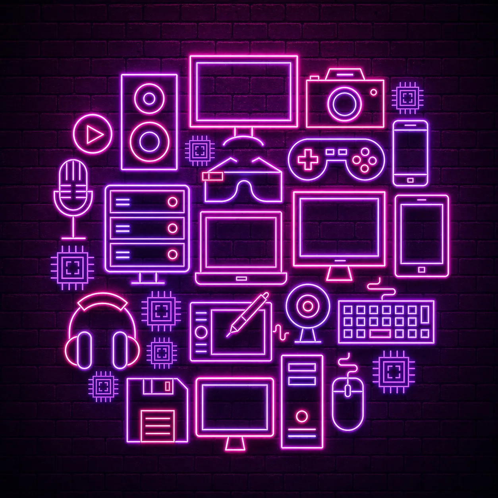
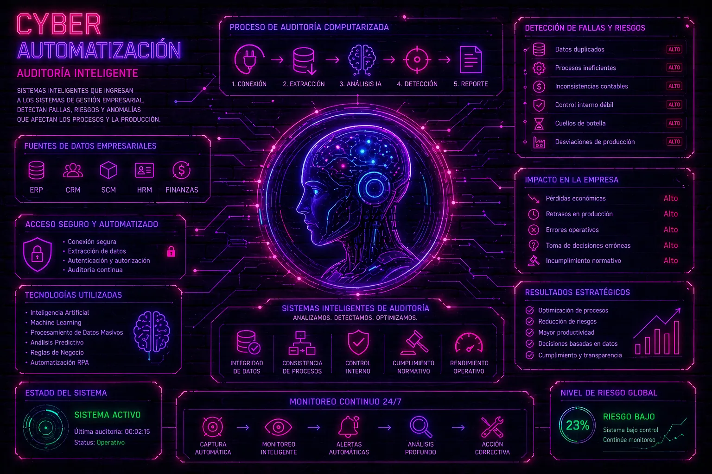
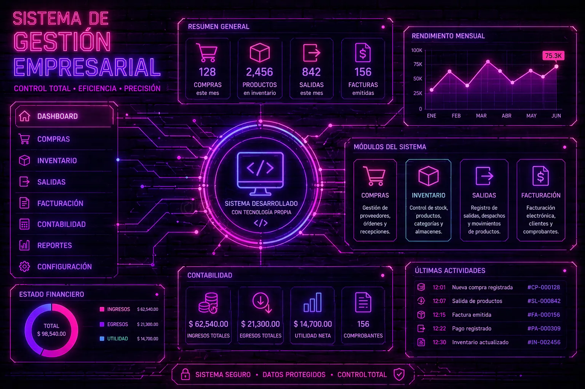

Claridad
Sistemas comprensibles, mantenibles y centrados en el objetivo.
Disponible para nuevos retos
Soy Eduardo, desarrollador enfocado en automatización, inteligencia artificial y soluciones empresariales. Combino lógica, creatividad y una estética tecnológica propia.
Diseño con intención.
Desarrollo con lógica.
01 / PERFIL
Me interesa crear herramientas que resuelvan problemas reales sin perder de vista la experiencia de las personas que las usan.
Trabajo especialmente con Python y Java, y continúo ampliando mis capacidades en desarrollo web, bases de datos, automatización e inteligencia artificial aplicada.
Sistemas comprensibles, mantenibles y centrados en el objetivo.
Aprendizaje continuo para convertir nuevas ideas en mejores soluciones.
02 / ESPECIALIDADES
Áreas que conectan pensamiento técnico, optimización y diseño de experiencias digitales.
Construcción de soluciones funcionales con buenas bases, lógica clara y una interfaz cuidada.
Exploración de procesos inteligentes para reducir tareas repetitivas y mejorar decisiones.
Experiencias inspiradas en la ciencia ficción, sin sacrificar legibilidad ni usabilidad.
03 / PROYECTOS

Concepto 01Inventarios · Operaciones
Propuesta para centralizar productos, movimientos y seguimiento de ventas en una experiencia clara y fácil de consultar.

Concepto 02Automatización · Inteligencia artificial
Sistema conceptual para conectar fuentes empresariales, detectar riesgos y transformar el análisis en acciones correctivas.

Concepto 03ERP · Control empresarial
Visión de una plataforma modular para coordinar compras, inventario, facturación, contabilidad y reportes desde un solo lugar.
04 / HERRAMIENTAS
Una base versátil para construir, automatizar y conectar soluciones.
05 / CONTACTO
Estoy abierto a conversar sobre desarrollo, automatización, proyectos de aprendizaje y nuevas oportunidades.